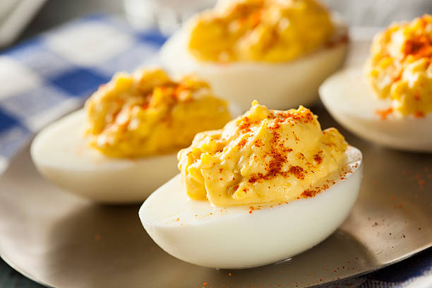

Deviled Eggs

Description
Deviled eggs are a tangy, yummy treat sure to disappear at most any pot luck event.
Ingredients
- Hard-boiled eggs
- Mayo or Miracle Whip
- Mustard
- Paprika
Instructions
- Cut eggs in half lengthwise and scoop yolks into a mixing bowl.
- Mash egg yolks with a fork.
- Mix in Mayo and Mustard to desired consistency and taste.
- Scoop mixture into hollowed-out egg white halves.
- Sprinkle with paprika.